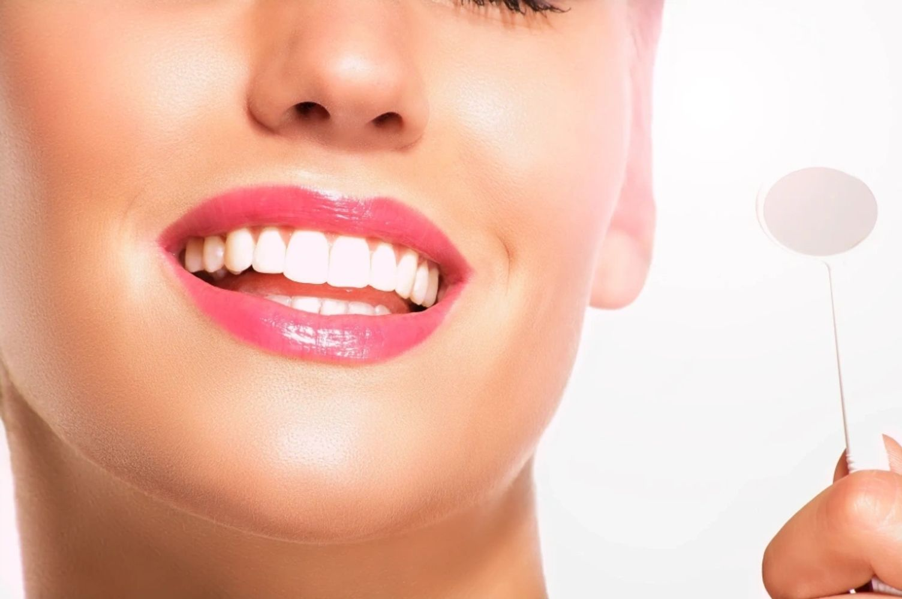
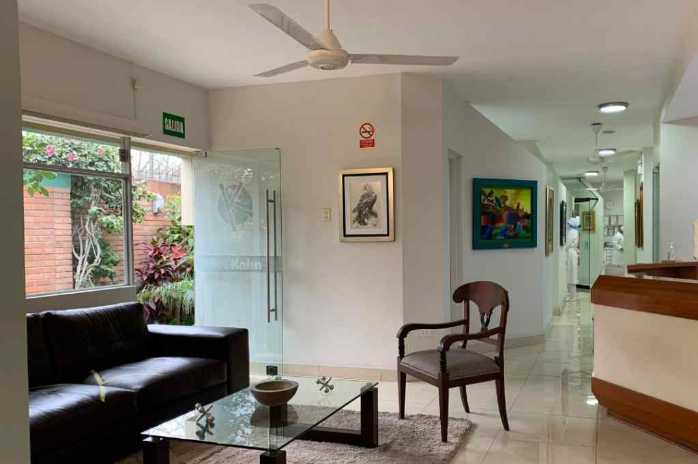

Rehabilitación oral y estética dental
Trata la ausencia de piezas dentarias: devuelve la anatomía, la función y la estética al sistema dentario, fijando coronas unitarias o múltiples a dientes.
Dentistas Asociados · San Borja
Más de 35 años de experiencia en atención integral y personalizada, con un equipo de especialistas y una moderna infraestructura. Hoy también en nutrición, psicología y psiquiatría.

Un centro de salud integral
Atención de especialistas en cada rama de la odontología, con el acompañamiento de un mismo equipo.
Una alimentación adecuada fortalece dientes y encías, previene caries y mejora la recuperación en tratamientos odontológicos.
Apoyo psicológico y atención psiquiátrica que complementan la odontología, ayudando a manejar la ansiedad y el estrés, y a reforzar la confianza y el autocuidado.
Servicios
Trata la ausencia de piezas dentarias: devuelve la anatomía, la función y la estética al sistema dentario, fijando coronas unitarias o múltiples a dientes.
Trabaja en la corrección y prevención de anomalías causadas por irregularidades en los maxilares.
El tratamiento de conductos consiste en la limpieza, descontaminación y relleno de la cámara pulpar y sus conductos, para luego restaurar el diente.
Prevención, diagnóstico y tratamiento de enfermedades como la gingivitis o la periodontitis.
Aborda los problemas de dolor y función del sistema masticatorio que pueden producirse a raíz del bruxismo o de problemas de la mordida.
Es importante que la primera atención de un niño la realice un especialista en niños.
Incluye extracción de molares del juicio, colocación de implantes, diagnóstico de quistes, tumores y otras patologías de tejidos duros y blandos, y su tratamiento.
Las áreas que ampliaron nuestra propuesta para el cuidado completo del paciente.

Nuestra sede en Cavallini 296, San Borja.Quiénes somos
Dental Kahn es una institución de salud con más de 35 años de experiencia, dedicada a brindar atención integral y personalizada.
Agendar su cita
Le respondemos al instante, las 24 horas, con nuestro asistente virtual.
A cualquier hora, desde el mismo WhatsApp que ya usa.
Le pregunta lo necesario, de a una consulta por vez, y le ofrece turnos disponibles.
Nuestro equipo recibe sus datos y la confirmación llega por el mismo chat.
Preguntas frecuentes
En Dental Kahn contamos con profesionales altamente calificados en todas las especialidades odontológicas, brindando atención integral y de calidad. La odontología moderna se basa en la prevención, por eso recomendamos controles cada seis meses. Si tiene dudas sobre qué especialista consultar, contáctenos y con gusto le orientaremos.
Es el hábito de rechinar o apretar los dientes, muchas veces causado por estrés. Se trata con férulas de descarga y acompañamiento psicológico si es necesario.
Recomendamos al menos una vez cada seis meses, para prevenir caries y gingivitis y mantener una sonrisa saludable.
Nuestros especialistas recomiendan llevar a los niños desde los 6 meses, cuando aparecen los primeros dientes. A esa edad ya es posible detectar malformaciones o problemas que puedan afectar su salud dental a futuro.
La tradicional utiliza brackets metálicos, efectivos pero más visibles. La estética emplea opciones más discretas, como brackets de porcelana o alineadores transparentes (Invisalign), con la misma eficacia y una apariencia más estética y cómoda.
Sí. Una dieta balanceada fortalece dientes y encías, y reduce el riesgo de caries y enfermedades periodontales.
Sí. El estrés y la ansiedad pueden generar bruxismo, sequedad bucal y otros problemas.
Visítenos o contáctenos
Nos encanta recibir a nuestros pacientes. Escríbanos por WhatsApp y le ayudamos a elegir fecha y especialista.
Agendar por WhatsApp